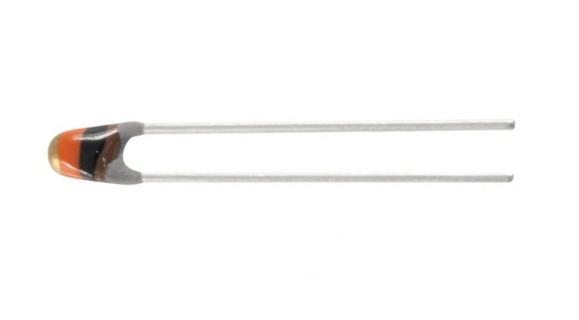
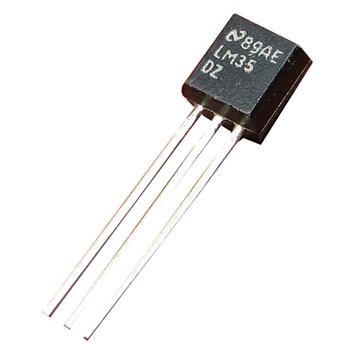
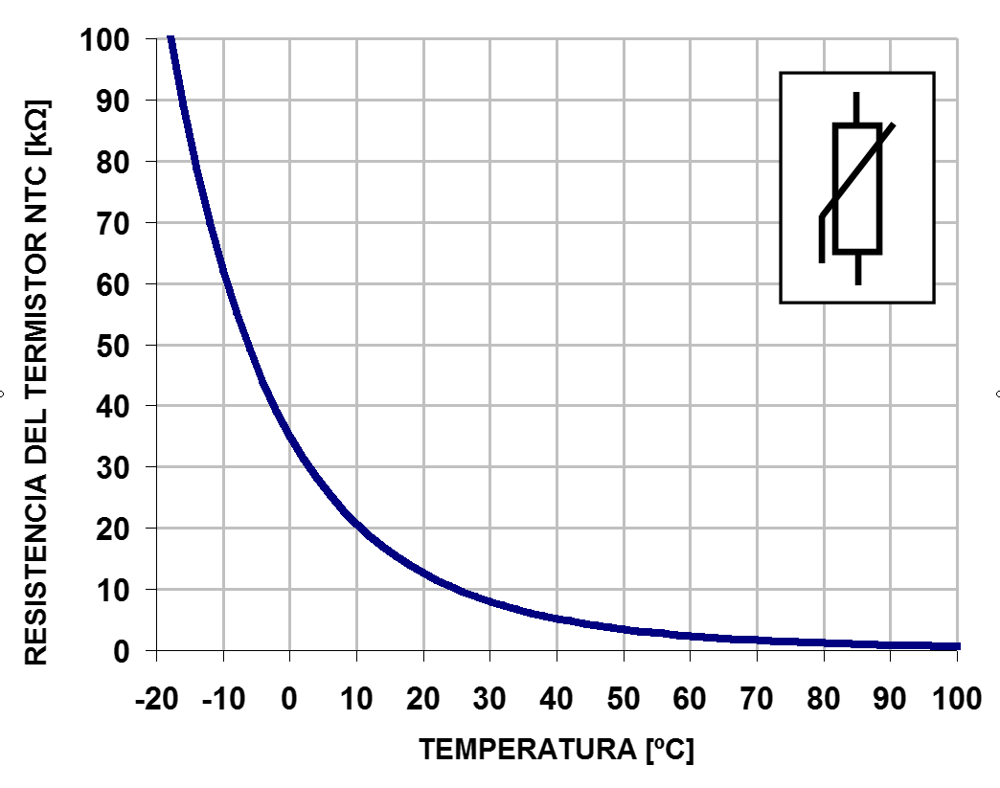
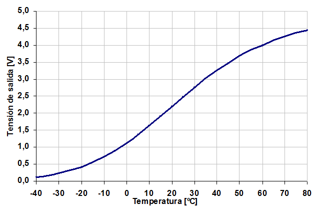
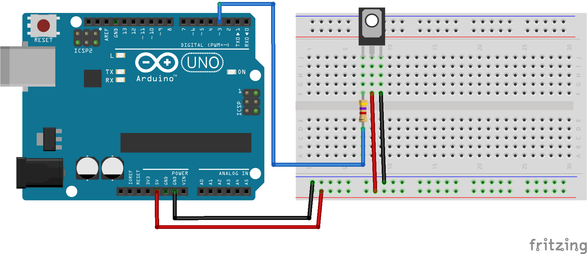
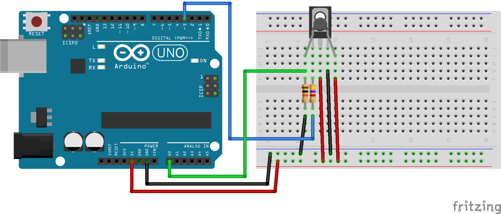

3. Sensor de temperatura¶
Un sensor de temperatura és un component electrònic que retorna un senyal elèctric que depèn de la temperatura del sensor. Des del senyal elèctric podeu conèixer la temperatura real amb la qual es troba el sensor.
Hi ha molts tipus diferents de sensors de temperatura. Cada tipus de sensor s’adapta bé a una aplicació específica. En aquestes pràctiques, només s’estudiaran els sensors de baix preu que arribin a un rang de temperatures moderats, de -40 ºC a 150 ºC. Amb precisió moderada, d’1 ºC a 0,1ºC d’error.
Sensor de temperatura NTC.
{kind=link}

Sensor de temperatura amb seu al circuit integrat LM35.
{kind=link}

Els sensors de temperatura són molt útils per a la mesura de la temperatura de la construcció i les màquines que regulen automàticament la temperatura. A continuació es mostren alguns exemples pràctics.
- Termòmetre digital per mesurar la temperatura corporal.
- Termòstat digital d’una casa.
- Termòstat de temperatura d’un forn.
- Sensor de foc.
- Termòstat aquari o terrari.
- Termòmetre digital de temperatura ambiental.
Funcionament d’un sensor NTC¶
Una resistència NTC és un component que redueix la seva resistència quan augmenta la temperatura. Aquest sensor no és lineal. Això significa que la seva precisió no és gaire bona en els intervals de temperatura ampli, en comparació amb altres sensors. Malgrat això, un sensor NTC ben ajustat pot mesurar les temperatures amb molta precisió, 0,1ºC en un petit interval de temperatura.
El següent gràfic representa la resistència d’un sensor NTC en el seu rang de mesura de temperatura.
{kind=link}

Com podeu veure, la resistència disminueix a mesura que augmenta la temperatura. La forma de la corba és no lineal, cosa que dóna problemes a l’hora de calcular la temperatura exactament. La fórmula següent es pot utilitzar per calcular la resistència segons la temperatura.
R = Resistència al sensor NTC
T = temperatura en graus Kelvin
B = temperatura característica del material. Entre 2000ºK i 5000ºK
A = constant del termistor. Depèn del material.
Els coeficients: matemàtiques: a y: math:` b` depenen de cada component i es poden trobar en les característiques dels fabricants o es pot calcular per a un sensor NTC específic a partir d'una prova, mesurant la resistència a diverses temperatures.
Especificacions d’un sensor NTC¶
S'ha escollit un sensor NTC amb un sensor nominal de 10k ohms a la temperatura de 25 ºC
- Resistència de 25 ºC = 10k ohms
- Bandes de colors = taronja marró negre
- Temps de resposta = 1,2 segons
- Constant a = 0.01618 ohms
- Constant B = 3977 ºK
A continuació, es mostra una imatge amb la corba de tensió proporcionada per aquest sensor NTC connectat a 5 volts, amb una resistència de polarització de 10k ohm connectada a la massa.
{kind=link}

Taula de dades amb els valors de la corba.
Temperatura Esforç -40 0.117 -35 0.165 -30 0.230 -25 0,314 -20 0,422 -15 0,555 -10 0,717 -5 0,908 0 1.128 5 1.373 10 1.638 15 1.918 20 2.203 25 2.486 30 2.760 35 3.020 40 3.260 45 3.480 50 3.676 55 3.851 60 4.004 65 4.138 70 4.253 75 4.353 80 4.439
Aquesta taula es pot utilitzar per cercar valors de tensió o temperatura intermedis mitjançant l'ordre mapa ().
Per calcular altres valors fora del rang o calcular valors d’un sensor NTC diferent, es pot utilitzar el full Excel adjunt: descarregar: ntc <control/_downloads/ntc.xls>.
Esquema de connexió d’un transistor de calefacció¶
A la imatge següent es pot veure el cablejat necessari per fer un escalfador basat en un transistor bd135 `(Static Datashet) <../_ Static/Document/BD135-st.pdf>
{kind=link}

Aquest circuit és capaç de consumir fins a 200 mil·límetres a 5 volts, proporcionant 1 watt de potència. Aquesta potència és suficient per augmentar la temperatura del transistor a 100 graus centígrads a l'aire lliure. Si es col·loca algun tipus d’aïllament, la temperatura pot augmentar encara més, destruint el component.
Per aquest motiu, cal tenir especial cura de no activar la potència màxima al transistor i ** prendre les precaucions necessàries perquè no hi hagi cremades **.
El programa següent permet provar el transistor.
1 2 3 4 5 6 7 8 9 | // Enciende el transistor conectado al pin digital 3
void setup() {
pinMode(3, OUTPUT); // Define el pin 3 como salida
}
void loop() {
analogWrite(3, 128); // Señal en pin 3 encendida al 50%
}
|
Esquema de connexió d’un sensor NTC¶
Per tal que el sensor NTC doni un voltatge útil que es pugui mesurar, cal afegir una resistència de polarització. Aquesta resistència es col·loca entre el sensor i la massa com es mostra el següent esquema.
{kind=link}

** Autoescalfament: ** El calefacció consisteix en l’augment de la temperatura produïda al sensor NTC El corrent subministrat per poder mesurar la temperatura. Si el sensor rep molt de corrent, augmentarà artificialment la temperatura interior produint una lectura de temperatura superior a la temperatura real.
Si, al contrari, la resistència rep poc corrent, el senyal de tensió serà difícil de mesurar i el soroll elèctric també produirà errors de mesura.
Els valors de resistència entre 5k ohms i 50k ohms mantenen un bon equilibri entre aquests dos efectes oposats quan treballen entre 0 i 5 volts. Per això, s'ha escollit un sensor NTC de 10k ohms.
** Resistència a la polarització ** El valor de la resistència a la polarització ha de ser aproximadament igual al valor de resistència del sensor NTC a temperatura ambient. D’aquesta manera, es pot mesurar amb més precisió l’interval de temperatura a prop de la temperatura ambient. En aquest muntatge s'ha escollit un sensor NTC que té una resistència de 10k ohm a 20 ºC i, per tant, la resistència a la polarització té aquest mateix valor.
** Entrada analògica ** El senyal del sensor NTC s'ha connectat a una entrada analògica que pot mesurar amb precisió les tensions entre 0 i 5 volts. Una entrada digital no pot mesurar més de dos valors de tensió d'entrada diferents i, per tant, no és capaç de llegir correctament el valor de tensió d'un sensor NTC.
El següent programa permet mesurar la tensió generada pel sensor NTC
1 2 3 4 5 6 7 8 9 10 11 12 13 14 15 16 17 18 19 20 21 22 | // Mide el valor de tensión del sensor NTC conectado en
// el pin analógico A0
void setup() {
Serial.begin(115200); // Inicializar el puerto serie
}
void loop() {
// Lee la señal analógica del pin analógico
int ntc = analogRead(A0);
// Convierte el valor del conversor analógico-digital
// en un valor de tensión de 0 a 5 voltios
float volt = ntc * (5.0 / 1024.0);
// Envía el valor de tensión por el puerto serie
Serial.print("Volt =\t");
Serial.println(volt);
// Espera un segundo antes de continuar
delay(1000);
}
|
Exercicis¶
Muntar l'esquema de connexió del sensor de temperatura amb el transistor de calefacció. Completa la taula següent amb els valors de tensió mesurats al sensor per a diferents potències del transistor de calefacció.
Transistor Tensió NTC 0 50 100 150 200 250 Cada vegada que canviï la potència del calefactor, caldrà esperar que la tensió mesurada al sensor NTC s’estabilitzi. La durada depèn dels components i pot ser de dos o tres minuts per aconseguir la màxima precisió.
1 2 3 4 5 6 7 8 9 10 11 12 13 14 15 16 17 18 19 20 21 22 23 24 25 26 27 28 29
// Control de temperatura en lazo abierto. // Calentador: Transistor BD135 // Sensor de temperatura: NTC de 10k Ohmios const int potencia = 0; void setup() { pinMode(3, OUTPUT); // Define el pin 3 como salida Serial.begin(115200); // Inicializar el puerto serie } void loop() { // Establece la potencia del transistor analogWrite(3, potencia); // Lee la señal analógica del pin analógico int ntc = analogRead(A0); // Convierte el valor del conversor analógico-digital // en un valor de tensión de 0 a 5 voltios float volt = ntc * (5.0 / 1024.0); // Envía el valor de tensión por el puerto serie Serial.print("Volt =\t"); Serial.println(volt); // Espera un segundo antes de continuar delay(1000); }
El programa següent controla la temperatura del sensor en bucle tancat. L’esquema operatiu s’anomena tot/res. Al principi, el programa il·lumina el calefactor a la màxima potència. Quan la temperatura supera el valor desitjat, el calefactor està completament apagat.
1 2 3 4 5 6 7 8 9 10 11 12 13 14 15 16 17 18 19 20 21 22 23 24 25 26 27 28 29 30 31 32 33 34 35 36
// Control de temperatura en lazo cerrado. // Esquema de control Todo / Nada // Calentador: Transistor BD135 // Sensor de temperatura: NTC de 10k Ohmios void setup() { pinMode(3, OUTPUT); // Define el pin 3 como salida Serial.begin(115200); // Inicializar el puerto serie } void loop() { // Lee la señal analógica del pin analógico int ntc = analogRead(A0); // Convierte el valor del conversor analógico-digital // en un valor de tensión de 0 a 5 voltios float volt = ntc * (5.0 / 1024.0); // Apaga el calentador si la temperatura supera // el nivel establecido. if (volt > 3.5) { Serial.print("OFF "); analogWrite(3, 0); } else { Serial.print("ON "); analogWrite(3, 255); } // Envía el valor de tensión por el puerto serie Serial.print("Volt =\t"); Serial.println(volt); // Espera un segundo antes de continuar delay(1000); }